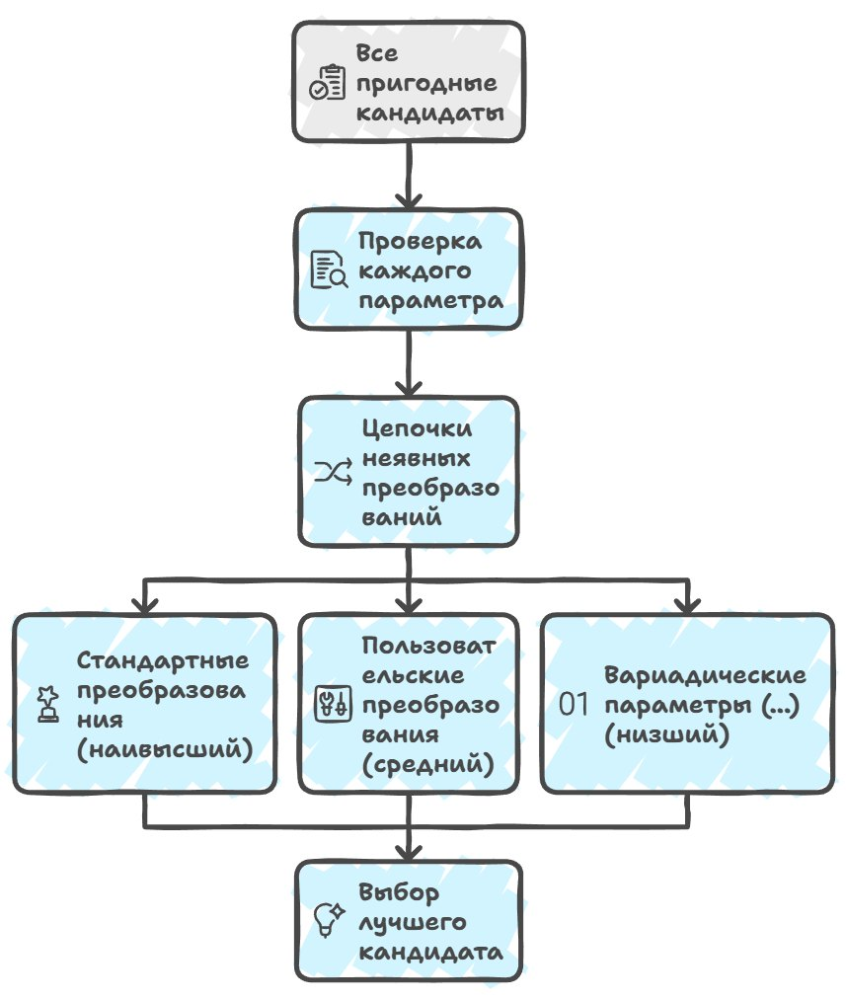

Nell'articolo precedente ho analizzato come funziona la ricerca qualificata e come using namespace vi partecipi soltanto come ripiego, quando nello scope indicato non ci sono dichiarazioni proprie. Il compilatore prima guarda cosa è dichiarato direttamente nel contesto corrente, e solo in caso di fallimento passa ai nomi mescolati tramite la direttiva using. Lo schema sembrerebbe trasparente e prevedibile: c'è uno scope di ricerca, c'è la priorità delle dichiarazioni esplicite, c'è la «regola delle N dichiarazioni» come assicurazione.
Ma non appena passiamo dalle variabili e dalle funzioni a meccanismi più generali nel codice, questa trasparenza comincia subito a incrinarsi — e nel codice più ordinario che ogni sviluppatore scrive fin dai suoi primi giorni di apprendimento. Per le regole del linguaggio possiamo collocare una direttiva using namespace ovunque, ma se qualcosa è dichiarato esplicitamente nello scope nominato dal qualificatore, la ricerca qualificata troverà proprio quella dichiarazione, e solo se non c'è un nome dichiarato esplicitamente il compilatore inizia a considerare i nomi resi visibili tramite using namespace, e così via lungo la catena.
Ma qui c'è un punto scivoloso di cui la maggior parte dei manuali e dei corsi tace, aggirando il tema degli operatori. Per esempio, l'operatore di shift a sinistra << può essere definito in qualsiasi namespace.
std::cout << "hello";In sostanza questo codice corrisponde a una chiamata di funzione, e il compilatore non vi vede nient'altro che
operator<<(std::cout, "hello");Ma perché funzioni nel modo in cui lo vediamo ora, la funzione operator<< deve essere trovata nel namespace std, cioè quello di cui in realtà abbiamo bisogno è una chiamata di una forma che in forma pura non esiste:
std::operator<<(std::cout, "hello");Ma se guardi la sintassi originale std::cout << "hello", il qualificatore std:: lì in forma pura non c'è — o meglio c'è, ma solo per l'operando sinistro cout, e formalmente std:: non è affatto collegato al nome dell'operatore. Quindi come fa il compilatore a capire dove esattamente cercare l'operatore giusto?
La risposta a questa domanda fu proposta da Andrew Koenig all'inizio degli anni '90, e oggi la conosciamo come argument-dependent lookup, o ADL, che fa cercare al compilatore la funzione nei namespace associati ai tipi degli argomenti della chiamata. Ma effettuerà tale ricerca non qualificata solo se non ha trovato nulla di adatto nello scope di ricerca corrente, il che aggiunge grattacapi sia agli sviluppatori dei compilatori sia agli sviluppatori che usano quei compilatori.
namespace N {
struct A {};
void f(A);
}
int main() {
N::A a;
f(a);
}Sulla chiamata f(a), la ricerca non qualificata del nome f nello scope corrente non trova nulla, abilitando così l'ADL. Il compilatore vede allora che l'argomento a ha tipo N::A, e quindi vede anche il namespace N associato a quella variabile, poi cerca f dentro N, trovando finalmente N::f. Così la chiamata f diventa valida.
È anche per questo che funziona la ricerca per l'output su stream: tramite l'argument-dependent lookup (ADL) il compilatore vede che l'argomento sinistro std::cout ha un tipo definito nel namespace std, e vi cerca un operator<< adatto. Ma se la ricerca non qualificata ha trovato una qualsiasi entità — che sia un tipo, una variabile, un template, qualunque cosa — allora l'ADL viene disattivata completamente.
typedef int f;
namespace N {
struct A {};
void f(A);
}
int main() {
N::A a;
f(a);
}Qui la ricerca non qualificata del nome f trova subito typedef int f ed è considerata riuscita, cioè non cerchiamo oltre. Di conseguenza il compilatore interpreta f(a) come un cast funzionale, cioè un tentativo di convertire a in int. E questo è perfettamente corretto dal punto di vista sintattico, ma chiaramente non è ciò che il programmatore si aspettava. È proprio per questo che l'interazione tra la normale ricerca non qualificata e l'ADL porta talvolta a risultati estremamente inattesi, quando una funzione «ovvia» risulta del tutto invisibile al compilatore.
Ecco un altro esempio scivoloso (sembra sicuro, vero?):
namespace std {
struct ostream {
ostream& operator<<(const char*) {
printf("world");
return *this;
}
};
ostream cout;
}
using namespace std;
int main() {
cout << "hello";
}Qui il nome std viene trovato dalla ricerca non qualificata e non si riferisce affatto alla libreria standard, bensì al nostro sostituto locale, mentre la scrittura ::std::cout punta inequivocabilmente al namespace globale e al vero std.
È proprio per questo che la libreria standard usa sempre nomi completamente qualificati con ::std:: e non si affida alla ricerca non qualificata — come vedi, è troppo facile «dirottarla» con trucchetti locali.
Questo esempio mostra vividamente perché occorre sapere quale entità stai usando nel codice. Ma anche se abbiamo indicato inequivocabilmente il namespace, il compilatore deve comunque risolvere il problema di quale specifico candidato di funzione scegliere tra molti overload. Soprattutto se le funzioni possono prendere un numero diverso di argomenti, avere parametri di default o richiedere conversioni implicite.
Ed è qui che entra in gioco il concetto di viabilità di una funzione, di cui parleremo più avanti — cos'è e perché è importante nella risoluzione degli overload.
La verifica della viabilità di una funzione
Prima di tutto, la verifica di viabilità valuta se un particolare candidato è adatto alla chiamata con l'insieme dato di argomenti, secondo vari criteri. Per esempio, se abbiamo una funzione che prende due parametri e proviamo a chiamarla con un solo argomento, tale candidato viene automaticamente ritenuto non viabile, e in questo caso il compilatore semplicemente non riuscirà ad abbinare la chiamata alla definizione della funzione, escludendo la variante dalla lista degli overload.
// Una funzione con due parametri
void greet(const std::string& firstName, const std::string& lastName) {
cout << "Hello, " << firstName << " " << lastName << "!";
}
int main() {
std::string name = "Alice";
// Un tentativo di chiamare la funzione con un solo argomento
// greet(name); // Errore: nessun overload corrispondente
// La chiamata corretta con due argomenti
greet(name, "Smith"); // Funziona: Hello, Alice Smith!
return 0;
}Analogamente, i metodi privati di una classe non possono essere scelti come candidati dall'esterno della classe, e anche i costruttori con il modificatore explicit sono presi in considerazione nella verifica, dal momento che richiedono una chiamata esplicita.
class Person {
private:
void secretGreet() {
std::cout << "This is a secret greeting!" << std::endl;
}
public:
void publicGreet() {
std::cout << "Hello!" << std::endl;
}
};
int main() {
Person p;
// p.secretGreet(); // Errore: il metodo è inaccessibile
p.publicGreet(); // Funziona: il metodo è pubblico
return 0;
}Il punto è questo: un costruttore explicit resta un candidato viabile per l'inizializzazione diretta (una chiamata esplicita), ma viene escluso dai candidati nell'inizializzazione per copia e nelle conversioni implicite. Cioè non «richiede sempre una chiamata esplicita» nel senso in cui un metodo privato è «sempre inaccessibile dall'esterno» — viene specificamente filtrato via in quei contesti in cui sarebbe richiesta una conversione implicita.
class MyString {
public:
explicit MyString(const char* s) { /* ... */ }
};
void print(MyString s) { /* ... */ }
int main() {
MyString a("hello"); // OK: inizializzazione diretta, il candidato è viabile
MyString b = "hello"; // Errore: inizializzazione per copia,
// il costruttore explicit è escluso
// dai candidati
print("hello"); // Errore: la conversione implicita
// è vietata
print(MyString("hello")); // OK: conversione esplicita
}Questo comportamento fu adottato dal comitato come modo per scartare in anticipo una funzione, nella fase di formazione della lista dei candidati, in determinati contesti di chiamata, ancor prima che il compilatore inizi a confrontare tra loro i candidati viabili per qualità di corrispondenza degli argomenti.
Dopo che il compilatore ha scartato tutte le varianti non adatte, inizia la fase di scelta del candidato migliore. Qui vengono in soccorso le sequenze di conversione implicita, che il compilatore applica a ciascun parametro di funzione con le seguenti priorità: conversioni standard, conversioni definite dall'utente e, dopo tutto, i parametri variadici indicati con …

struct S {
S(int x) { std::cout << "S(int) constructor called\n"; }
// conversione definita dall'utente
};
void foo(double d) {
std::cout << "foo(double) called\n";
}
void foo(S s) {
std::cout << "foo(S) called\n";
}
void foo(...) {
std::cout << "foo(...) called\n";
// versione variadica
}
int main() {
int x = 42;
// Quale foo verrà chiamata?
foo(x);
return 0;
}Guardiamo l'esempio sopra più in dettaglio. Abbiamo tre overload della funzione foo:
- il primo prende un
double, e per una chiamata con un argomentointqui verrà applicata la conversione standardint → double; - il secondo overload prende un oggetto di tipo
S, dove esiste un costruttoreS(int), e in questo caso è richiesta una conversione definita dall'utente daintaS; - la terza versione della funzione è un overload variadico con
..., che può prendere qualsiasi argomento ma ha la priorità più bassa.
Ora chiamiamo foo(x), dove x ha tipo int. Il compilatore raccoglierà tutti gli overload possibili, e tutti e tre vanno bene: ciascuno di essi può essere chiamato con un argomento int, sia pure attraverso conversioni diverse.
Ora ripercorriamo le sequenze di conversione per ciascun candidato, come fa il compilatore, che alla fine sceglie il percorso di esecuzione con la complessità minore.
- per
foo(double)va applicata la conversione standardint → double, cioè servono conversioni minime — diciamo che ha complessità 1; - per
foo(S)va usata una conversione definita dall'utente tramite il costruttoreS(int), che è un po' più difficile e ha complessità 2; - per la versione variadica
foo(...)verrà applicata una conversione variadica, che comporta la logica più complessa, con complessità 3.
«Complessità 1, 2, 3» è una mia semplificazione per l'esempio. Nello standard questo si chiama rango della conversione, e i ranghi non «si sommano come la complessità». Dopo un simile resoconto potresti avere l'impressione che il compilatore in qualche modo sommi dei punti, ma in realtà, nei compilatori reali, le sequenze di conversione vengono confrontate con la regola del «migliore sul parametro peggiore». E ogni compilatore ha le sue stranezze con queste regole.
Perché è stato scelto proprio questo ordine? Storicamente è legato all'evoluzione dello stesso linguaggio C++ e all'esperienza del suo uso nei primi progetti in C, dove regole di tipo rigorose si erano già assestate. Si ritiene che l'idea appartenga a Bjarne e al primo team di sviluppo del C++ ai Bell Labs, per ridurre la complessità computazionale sulle macchine dell'epoca quando progettavano il C++. Penso che tu ti sia convinto ancora una volta che molte decisioni moderne sono cresciute dagli anni '80–'90, quando il linguaggio assorbiva attivamente nuove idee ma era vincolato dalle prestazioni dell'hardware. È così che si è ottenuto che il compilatore scelga il modo più «naturale» di chiamare una funzione senza ricorrere, quando possibile, a conversioni complesse.
E un altro piccolo excursus storico...
Il primo C++ (Cfront, anni '80): il primo compilatore C++ usava l'eliminazione dei candidati passo dopo passo — prima si verificavano le corrispondenze esatte di tipo, poi si applicavano le conversioni standard, poi quelle definite dall'utente, e questo processo era completamente esplicito nel codice del compilatore e basato sul ranking delle conversioni nel compilatore stesso.
GCC e Clang: i compilatori moderni mantengono questa gerarchia, ma invece dell'eliminazione passo dopo passo costruiscono una tabella di candidati, marcando per ciascun parametro il «tipo di conversione» e il suo rango. Così, nella scelta del candidato migliore, al compilatore basta prendere quello adatto dalla cima della tabella per selezionare inequivocabilmente la funzione con le conversioni minime e meno complesse.
MSVC: costruisce analogamente le sequenze di conversione e ne tiene conto delle priorità, ma usa liste di candidati (l'implementazione è ottimizzata per la velocità di compilazione e la gestione di grandi insiemi di overload), usando «tag» interni per il ranking.
Ma devi capire che anche le conversioni standard hanno dei subranghi, e convertire char in int è considerato più preferibile che convertire int in double, e il compilatore usa i subranghi per scegliere la variante migliore tra molti candidati possibili.
void foo(int x) {
std::cout << "foo(int) called\n";
}
void foo(double x) {
std::cout << "foo(double) called\n";
}
int main() {
char c = 'A';
foo(c); // Quale variante verrà chiamata?
}In questo esempio abbiamo due candidati: foo(int) e foo(double). L'argomento ha tipo char, e il compilatore può convertire char in int (una piccola conversione standard), che è preferibile. Ma il compilatore può anche convertire char in double (anch'essa una conversione standard), ma con priorità più bassa, perché richiede prima l'allargamento a int e poi a double. Di conseguenza verrà chiamata foo(int), perché la conversione char → int è più «naturale» e semplice di char → double.
Di nuovo, per l'articolo ho semplificato i subranghi delle conversioni standard. Nello standard char → int è una promozione integrale (rango tipo-corrispondenza-esatta), mentre char → double è già una conversione floating-integral (una conversione a tutti gli effetti, di rango inferiore). Promozione e conversione sono categorie diverse, e la promozione batte sempre la conversione.
Un altro esempio con overload e valori di default (godbolt):
void bar(int x, int y = 10) {
std::cout << "bar(int, int) called\n";
}
void bar(double x) {
std::cout << "bar(double) called\n";
}
int main() {
int a = 5;
bar(a); // Quale variante chiamerà il compilatore?
}Qui abbiamo di nuovo due candidati: bar(int, int), ma il secondo parametro ha un valore di default, quindi la chiamata bar(a) va bene, e c'è bar(double), dove si può convertire int → double.
Il compilatore pesa le priorità: bar(int, int) non richiede alcuna conversione (int → int) e usa il valore di default per il secondo argomento, mentre bar(double) richiede una conversione standard implicita (int → double), quindi verrà chiamata bar(int, int).
=delete
=delete chiede a gran voce di stare nell'articolo: le funzioni cancellate partecipano alla risoluzione degli overload come candidati viabili e possono essere scelte come le migliori, dopodiché la chiamata viene rifiutata. È il caso più eclatante in cui «viabilità» e «disponibilità» divergono, e illustra bene perché serva affatto la nozione di viabilità.
Quando marchiamo una funzione con = delete, molti la percepiscono intuitivamente come «la funzione è sparita» e pensano a qualcosa come la sua rimozione dal codice. In realtà è esattamente il contrario: una funzione cancellata partecipa pienamente alla verifica di viabilità e al ranking, si comporta come un candidato ordinario, e il compilatore può persino sceglierla come miglior overload.
E solo dopo che la scelta è stata fatta il compilatore guarda la marcatura = delete e rifiuta la chiamata con un errore. Questo illustra perché serva affatto la nozione di viabilità come fase separata: «viabile per la partecipazione alla risoluzione» e «effettivamente chiamabile» sono due cose diverse.
void process(int x) { std::cout << "int\n"; }
void process(double x) = delete;
int main() {
process(42); // OK: viene chiamata process(int)
process(3.14); // errore: viene scelta process(double),
// ma è cancellata
process(1.0f); // errore: float → double è più preciso di float → int,
// quindi viene scelta la cancellata process(double)
}A prima vista sembra che, dato che process(double) è «cancellata», allora sulla chiamata process(3.14) il compilatore dovrebbe semplicemente ignorarla e cercare un altro overload — per esempio, convertire double in int. Ma non lo farà: l'overload cancellato resta un candidato viabile, vince la risoluzione secondo le consuete regole di ranking (per double una corrispondenza esatta è migliore di una conversione a int), e solo allora si imbatte in = delete.
L'overload process(int), che potrebbe accettare un double tramite una conversione standard, non viene nemmeno considerato — verrebbe scelto solo se process(double) fosse del tutto assente dalla lista dei candidati. Questo offre una tecnica idiomatica: vietare la chiamata di una funzione con determinati tipi non rimuovendola dall'insieme degli overload, ma al contrario lasciandovela deliberatamente perché «intercetti» gli argomenti indesiderati.
struct Handle {
void set(int id);
void set(void*) = delete; // vieta il passaggio di puntatori grezzi,
// inclusi nullptr e NULL
};
Handle h;
h.set(42); // OK
h.set(nullptr); // errore di compilazione, non una conversione implicita a intSe = delete significasse «rimuovere la funzione dalla considerazione», allora h.set(nullptr) chiamerebbe set(int) tramite la conversione nullptr → 0, e otterremmo un bug a runtime difficile da individuare.
Ma poiché set(void*) resta un candidato viabile e vince la risoluzione (per nullptr un puntatore è una corrispondenza esatta, mentre una conversione a int non lo è), il compilatore intercetta l'errore in fase di compilazione. È proprio per questo che distinguere formalmente il «viabile» dal «disponibile» è uno strumento a sé all'interno del linguaggio, su cui poggia un'intera classe di tecniche difensive del C++ moderno.
Cosa significa tutto ciò per lo sviluppatore
Nelle grandi basi di codice il processo di verifica della viabilità e di scelta del candidato migliore può essere molto complesso, perché occorre tenere conto del numero di parametri, della disponibilità della funzione, dei valori di default, delle conversioni implicite e delle priorità dei vari tipi di conversione. È proprio per questo che una stessa funzione può essere chiamata in modo diverso a seconda di quali overload siano disponibili nel contesto corrente e di quali argomenti vengano passati. Queste sono le regole di base per la scelta del candidato migliore nell'overloading delle funzioni, e spero di aver dato una comprensione di come il compilatore valuti la viabilità di una funzione.
Come materiale per i prossimi articoli vedo la trattazione dei processi che governano i tipi stessi degli argomenti e dei valori di ritorno nei template. È qui che incontreremo per la prima volta la deduzione dei tipi — il meccanismo con cui il compilatore deduce i tipi dei parametri del template dagli argomenti passati, e l'istanziazione del template, che sostituisce questi tipi nel corpo del template per creare una funzione o una classe concreta.
La comprensione di questi meccanismi determina quali overload di template verranno scelti e come verranno risolte le chiamate di funzione — ed è proprio di questo che parlerà il prossimo articolo…
P.S. Ho pubblicato i primi 7 capitoli di «Playful Programming» su GitHub in ru/en (playful_programming_cpp), anche se @OlegSivchenko suggerisce di chiamare la serie «Pragmatic C++» — le questioni sollevate sono semplicemente troppo pratiche e noiose. Se ti va di correggere il testo o gli esempi di codice, scrivimi.
← Tutti gli articoli